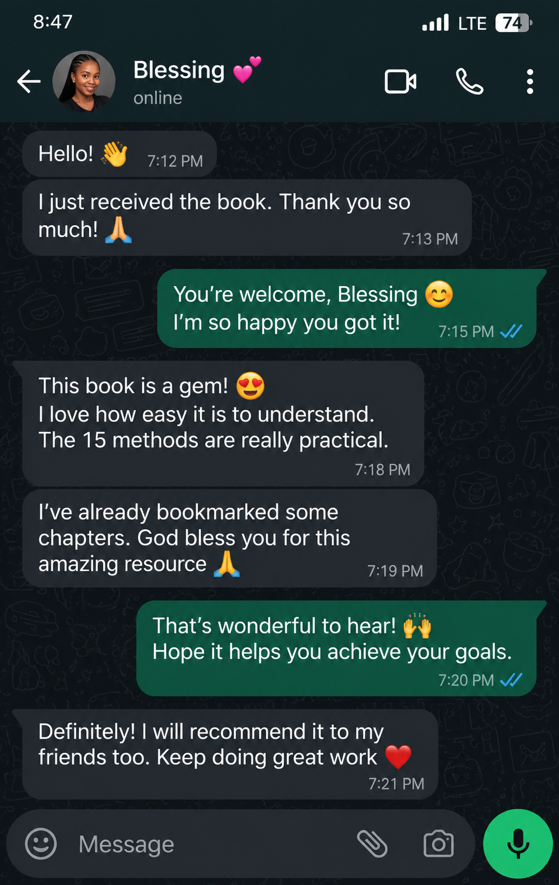
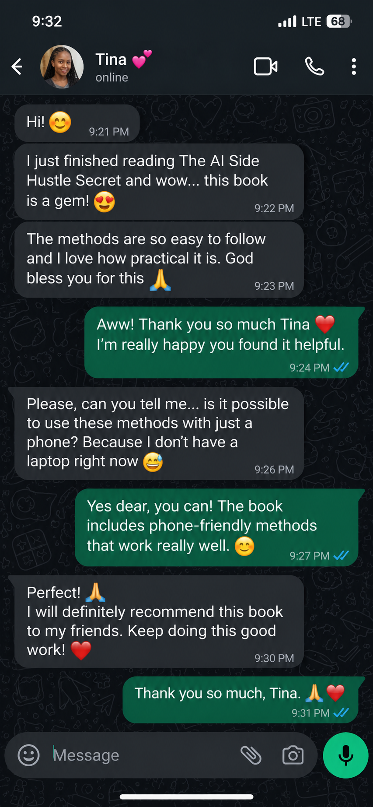
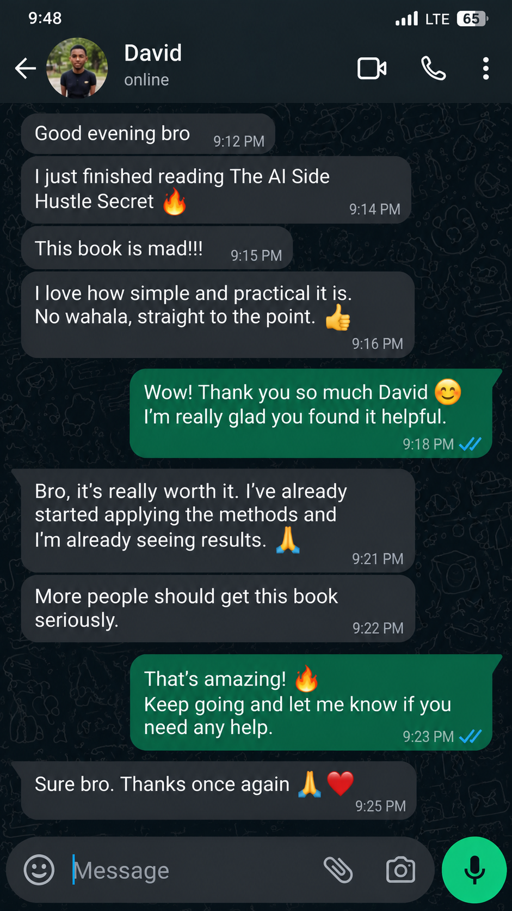
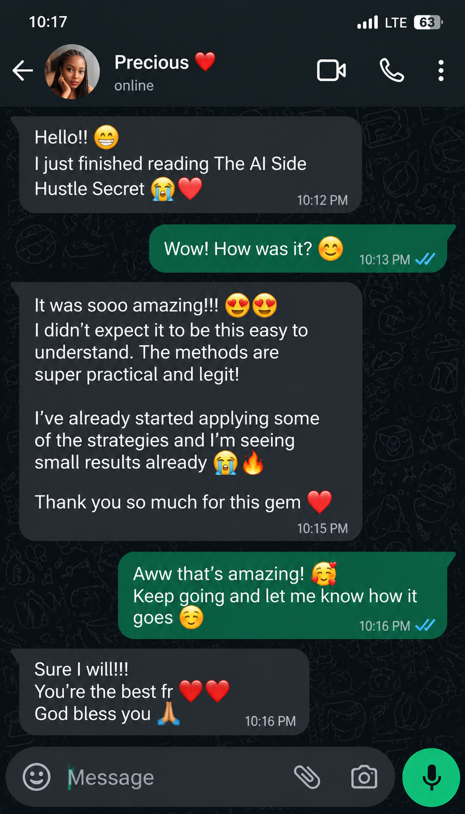

Too much noise. No clear skill.
New tools and advice keep appearing. It is hard to choose one useful service and focus long enough to practise it.
FOR THE PERSON WHO KNOWS AI MATTERS
If you’re tired of AI hype but still unsure which skill to learn, this guide gives you a practical place to start: explore 15 beginner-friendly AI services, practise a useful skill and learn how to start conversations with potential customers.
Digital guide · Seller-managed checkout and delivery · From ₦3,500
You don’t need to learn every AI tool at once. Explore 15 practical service paths, choose one to practise and decide on your next step.
Explore the guideTHE PART NOBODY EXPLAINS CLEARLY
You can watch another tutorial or save another prompt, but still be left wondering: What should I learn? Which real problem could I help solve? What do I say to a potential customer?
New tools and advice keep appearing. It is hard to choose one useful service and focus long enough to practise it.
Knowing how to generate an output is only part of the work. You also need to understand who might need it and why.
Turning a skill into a clear sample, a simple offer and a respectful first conversation can feel like a lot to figure out alone.
You don’t need to master every AI tool. You need one practical direction and a next step you can actually take.
THE PRACTICAL SOLUTION
The AI Side Hustle Secret turns a big, confusing topic into practical service ideas you can explore. Choose a path, practise with purpose, shape a useful offer and start real conversations. The Starter Bundle adds prompts, a workbook, message templates and a 30-day plan to help you put the ideas to work.
Learn how common AI workflows can support useful digital work.
Consider 15 ways to help creators, small businesses and other customers.
Use AI to help plan, draft and improve content with human review.
Prepare a clear offer and start respectful conversations.
See how AI can assist with marketing, ecommerce and digital services.
Use the 30-day plan to practise in manageable steps.
INSIDE THE BOOK
Choose one that interests you. Learn the basics. Practise on a small project. Then start conversations with people who may need that kind of help.
Get the guideA GROUNDED APPROACH
A clear path helps you make progress without pretending results happen overnight.
Explore the 15 services and choose one that fits your interests, time and access to tools.
Use the prompts and exercises to practise. Create a simple example that shows what you can do.
Use the message kit and action plan to explain your service and learn from customer feedback.
This is educational material, not a promise of earnings. Results depend on your skills, effort, market demand and other factors.
WHO THIS GUIDE IS FOR
You may find this useful if you are curious about AI and want a grounded way to explore digital work.
READER FEEDBACK
Swipe through the WhatsApp feedback shared about the book.




WhatsApp conversations shown as supplied. Names and photos are visible in the original screenshots.
PICK YOUR STARTING POINT
Start with the guide, or choose a bundle of practical tools to help you apply what you learn.
Choose a package and continue to the seller checkout and download page.
GOOD TO KNOW
Here are a few useful details about the book and how the purchase works.
Yes. It is written for beginners and explains practical AI service paths in clear steps.
No previous AI experience is required. You will need to practise and check the tools available to you.
A laptop can make some tasks easier, but many learning and content activities can be explored on a smartphone.
Yes. Many AI and communication tools have mobile versions. Website and automation tasks may be easier on a computer.
No. The guide includes non-coding service paths. Some technical services may require extra learning.
Graphic design, social media, copywriting, website creation, video, CVs, ebooks, product mockups, freelancing, digital marketing, WhatsApp marketing, automation, online training, YouTube and ecommerce support.
This offer is for a digital PDF ebook, not a printed book.
Choose a package to continue to the seller page for payment and download instructions. The seller handles checkout and delivery.
No. This is educational guidance, not a promise of clients or income. Results depend on your skills, effort, market demand and other factors.
Not necessarily. Tool access and free plans change; check current pricing and terms before you begin.
The PDF ebook, 100-prompt vault, action workbook, first-client message kit and 30-day action plan.
A pricing and client-tracking workbook, service launch checklist, 300 prompts organized by task and 30-day content calendar.
Yes. Choose the ₦3,500 Starter Edition in the packages section.
YOUR NEXT STEP STARTS HERE
Get a practical guide to exploring AI services and taking your first steps with intention.
Seller checkout and delivery · Digital ebook